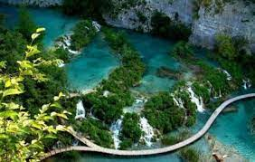

Air Force Museum
The Air Force Museum forms a part of the Indian Air Force's Eastern Command in Shillong. This museum is a tribute to the glorious past of the defense of our nation. It hosts aircraft models, actual machines and technology demonstrations used by the IAF Eastern Command. The museum displays the uniforms worn by the air force pilots, missiles, rockets, pictures of Indo-China War and Indo-Pakistan War, medals and miniature models of air crafts.
The huge MI 4 helicopter, played a central role in the 1971 war, is displayed in the museum lawn and makes for a remarkable sight. Another attraction is the Streak Shadow Microlight that's a part of the famous Microlight series. This splendid aircraft took its first flight in 1988. Caribou DHC 4, the fighter plane used for bombings in eastern Pakistan during the war of 1971, is the highlight of this place. The museum has a special section that houses a collection of several musical instruments. Visitors can also see Python's skin in the museum.
Seven Sisters Waterfall
Going by its name or, say, justifying its name, Seven Sisters Waterfalls has seven different waterfalls that are strategically arranged side by side on a high, rugged cliff, and looks very significant even from a distance. It is interesting to note that as this waterfall plunges down in seven stages, it derived its name from this fact. The view, in fact, makes for a captivating view when it rains and the entire region comes alive.The waterfall gushes through green vegetation onto the rugged cliffs and falls on the limestones, thereby making a roaring sound. To promote tourism and to pull more and more visitors to this site, the Tourist and Civil Aviation Department has built a waiting shed and a cafeteria here, where visitors can spend the time to relax and enjoy long photography sessions.
As efforts have been made to turn this site more tourist-friendly, it has now developed into a perfect spot where people love to spend time with their friends and family.
The very view of the waterfall against the lush green background makes for an interesting spot to visit. With time, this spot has grown popular among nature enthusiasts, photographers, and picnickers. Also to ensure that the photographers are able to get their perfect click, a small footbridge over the stream has also been constructed.
Rainbow Falls
Rainbow falls is a serene waterfalls located near Nongriat village in Cherrapunji, Meghalaya. Situated near Double Decker Root Bridge, it is one of the famous waterfalls in Meghalaya and among the popular places to visit in Cherrapunji.
Secluded deep within the forest, the falls got its name because one will see small rainbow near the waterfall due to sun rays. The waterfall drops down into the pool wearing the natural rainbow sashay with pride. The path to Rainbow Falls though defined is not cemented and is a mix of alternating ascents and descents.
The trek to the Rainbow Falls starts from Nongriat Double Decker Bridge and it will take 1 to 2 hours to complete the trek. The Double Decker Living Root Bridge in Nongriat village is accessible only by trek from Tyrna village. One needs to reach Tyrna by bus or cab. It is a 3 km challenging hike which includes around 3500 odd concrete steps one way. The total trek takes around 5 to 6 hours to complete.
One needs to wear comfortable shoes, and also carry enough snacks, water and medicine while trekking to Rainbow Falls. Guides are mandatory to this trek and are available at Tyrna village. Better to finish the trek before 5 PM as it becomes dark early in Meghalaya.
Single Root Bridge
Also known as Jingmaham Living Root Bridge, this single decker bridge in Riwai is a 300 years old manmade bridge built across a stream by intertwining the aerial roots of Rubber trees around a Betel tree trunk. The roots keep growing out and entwining the trunk and the bridge is elongated to the desired destination taking about 10-15 years to completion. The roots thicken over time and the bridge is further strengthened with stones, sticks, leaves, bamboos and other items serving the purpose for hundreds of years. This is the only means for the villagers to cross the streams to reach the other side.
To reach the bridge, one has to trek around 300 meters from the parking area. However the visual rewards will be so great that visitors will forget about all the discomfort that faced during the trek. The villagers of Riwai collect a nominal fee from the tourists for the improvement of the area. The best way to reach this place is to hire a taxi or jeep from Shillong.
Garden Of Caves
The Garden of Caves also known as “Ka Bri Synrang” is a natural habitat which has been created by seasonal waterfalls that are fed by rains. Meghalaya is truly a fascinating destination which would keep on surprising you with its unexplored gems. One of these gems is Caves in Meghalaya. There are many (Cave) in Meghalaya. Surrounded by green bushes and hedges, Garden of Caves is the abode of caves and waterfalls.Garden of Caves is Located 10 km from Laitryngew region, close to the village of Laitmawsiang is perhaps the most breathtaking spot in the state. The garden is a 2.5 hectare property which comprises seven major places of interest, Ka Synrang Syiem or the King’s cave, Sum Syiem Falls, Ki Stieh Maw which are warrior rocks, U Mawdohnud which is a heart-shaped rock, U Mawkhyllung or Baby rock, Arsdad Falls and the Riat Umlwai Falls.The Garden of Caves is surrounded by a dense jungle. The structures are lightened up by natural light, when the golden rays of the sun reflect on the ponds and in turn also light up the whole space, creating a very spellbinding activity to watch.
Eco Park
Eco Park was established in the year 2004 by the Meghalaya Government to facilitate tourists to enjoy the 'Green Canyons' of Sohra as well as the waterfalls that lie around it. The park is home to several hybrid and indigenous orchids in the Green House donated by Shillong Agri-Horticultural Society. The park houses children play area, monoliths, viewpoints, foot bridges, water conservation structures, and many shelters. There is a railing throughout the park which guides the way too.
The Park has a calm and peaceful atmosphere with the soft breeze blowing. Placed atop a plateau, this park offers nice views of the Sylhet Plains of Bangladesh. The southern corner of the Eco Park is the originating point of the popular Nohsngithiang Falls. There is a small eatery and souvenir shops outside the park for refreshment.
Entry Fee: Rs. 10 for Person
Timings: 8 AM - 5 PM
Wah-Kaba Falls
The waterfall drops from a steep rocky side and plunges hundreds of meters down to a gorge. The water flowing through the falls is crystal clear but surprisingly the water tastes nasty. Situated right on the road side, it is easily accessible and needs a short hike to reach the waterfall viewpoint. Visitors can even go to the edge of the waterfall where one can see some safety barriers in place to prevent accidents. One should be careful standing on top of the waterfall as well, it's very windy everywhere. There is also a smaller waterfall on the way to the much bigger Wah-kaba.
The best time to visit the falls is during the rainy season. The entire area is rain fed and hence the glory of the falls depends on rains.
Entry Fee: Rs. 10 for Person
Timings: 6 AM - 5 PM

Thangkharang Park
Thangkharang Park houses various species of plants and trees. With a calm ambience and scenic locales, the park acts as a great resting place and a lovely picnic spot for the people of all the ages. Maintained by State Forest Department, the park has a green house, a beautiful little fountain and two viewpoints strategically built on two of the three rocks that impart a good view of Khoh Ramhah or the pillar rocks and the valley below. There is also a small bridge that helps one cross over to the other section of the park when the stream below overflows with water.
Apart from being a lovely spot to picnic, Thangkharang Park gains its maximum popularity for being a perfect panoramic viewpoint for the nearby Bangladesh plains, and also the Kynrem Falls which falls down in three steps in the hills. Another popular attraction that lies in Thangkharang Park is the Khoh Ramhah rock, which is popularly known as the Giant Basket. Placed right opposite the entry gate of the park, this huge rock is in the shape of an upturned conical traditional Khasi basket. There are shops selling eatables and handicrafts items just outside the park.
Timings: 7 AM - 4 PM
Entry: Rs. 20 for Person
Spread Eagle Falls
Sati waterfall is located in East Khasi Hills in Shillong. This waterfall was locally called as Umkaliar. Later this waterfalls was renamed to Spread eagle waterfalls. This waterfall got it's named due to its weird shape which looked like an eagle with it’s wings wide open.
This waterfall forms a small pool at the bottom of the waterfall. Due to which one can even treat this spot as a picnic spot. This cascading mesmerizing waterfall is a perfect place to spend ample amount of time with your loved ones. This waterfall is frequently visited by all types of tourists throughout the year.